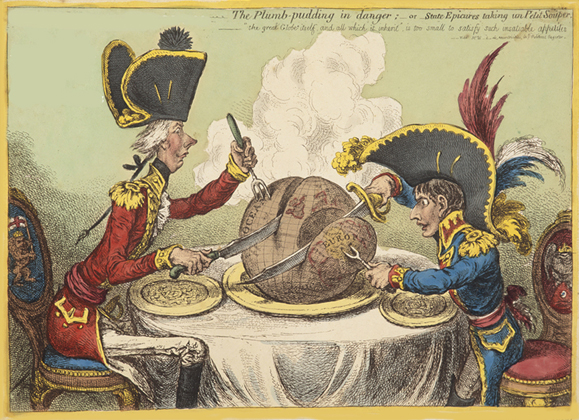
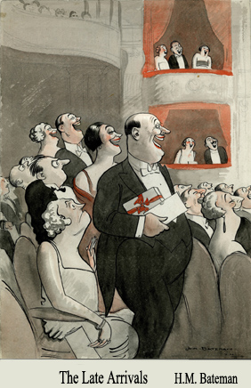
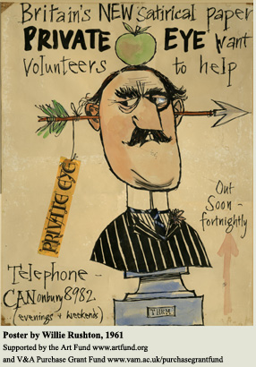

History of cartoons
Characters and Caricatures, 1700 - 1770

The cartoon art form began with 'caricatura'. A caricature - from the Italian caricare, to load or exaggerate - is a drawing that gives weight to the most striking features of its subject for comic effect. The great Italian masters such as Leonardo da Vinci, Annibale Carracci and Gian Lorenzo Benini, all drew caricatures. These were technical exercises in virtuosity with the aim of defining the essence of a person in a few deft strokes of the pen.
Many English artists looked to Italy for inspiration, but one man did not. William Hogarth, painter and engraver, believed: "Everything requisite to compleat the consummate painter or sculptor may [be had] with the utmost ease without going out of London". Hogarth created a new form of picture-story, 'comic history-painting' full of 'characters', not 'caricatura', copies of nature, not exaggerations. His 'modern moral subjects', that can be seen in The Harlot's Progress and The Rake's Progress, depict critical moments in life, in act and consequence. Time is represented in space, between and within each scene. It is for this reason that Hogarth is widely regarded as the father of British caricature, in spite of himself, and of the comic strip.
'The Golden Age', 1770 - 1830
From the 1770s it was the gentleman amateur and semi-amateur, such as Townshend, Bunbury, Woodward and Nixon, who transformed the artform, introducing a more playful style and a strong element of personal caricature. Social satire blossomed, offering humorous observations on current fashions and social pretensions. In the 1780s political satire ripened. Print-shops flourished in the City, Westminster and St. James's, many holding caricature exhibitions. The hand-coloured copper-plate etching, freer in style that the engraving, became fashionable: often priced at 2 shillings (10p) or more it was a luxury item, and beyond the means of most.
Modern Times 1914 - 1961
In the First World War, cartoonists rallied to the patriotic cause portraying an encounter between the national symbols and personifications. The morale-boosting works of Bert Thomas and Bruce Bairnsfather proved popular with British troops at the front. The first half of the twentieth century saw the heydey of the popular magazine, and cartoons helped to determine its graphic style and character. William Heath Robinson joined The Sketch in 1906 and entertained its readers through two world wars. H.M. Bateman perfected the wordless strip cartoon, and his 'The Man Who...' series of colour cartoons filled the centre-spread of The Tatler in the 1920s and 1930s.
Victor Weisz, 'Vicky', one of Britain's best post-war political cartoonists, was forced to flee Nazi Germany in 1935. When he started at the News Chronicle in 1939 his editor advised a crash course in British culture: he soon had a witty command of a British cartoonist's stock references and motifs, including Shakespeare and Tenniel's Alice drawings. Ronald Searle has been described as 'arguably the foremost graphic artist of [the twentieth] century', and is unquestionably one of the most influential. The malevolent schoolgirls of Searle's 'St Trinian's' appealed to a new public taste for black, cynical humour cultivated in wartime. In his later work a baroque extravagance of detail is painstakingly built up with his extraordinary line - stuttering, fidgety, barbed.
The New Satire 1961 -
Britain was finally coming out of a post-war period dominated by deference and social conformity. A younger generation of comedians was appearing on stage, radio and television. In 1961 a new satirical magazine Private Eye was founded. It was a magazine of political gossip and disclosure that ripped aside the curtains of gentility and decorum that Punch had upheld for over a century. For cartoonists it was a breath of fresh air, publishing cartoons that no other newspaper would print. For the first time in many decades caricature took centre stage. Two revolutionary artists pushed British satire to the extreme, both visually and politically: Ralph Steadman and Gerald Scarfe. Wally Fawkes, 'Trog', brought intense focus to caricature and political cartooning through his ability to condense a complex situation into a single memorable image. Peter Fluck and Roger Law had worked together since the 1960s. In the 1970s they began producing three-dimensional caricatures for the [Sunday] Times and other publications. Out of this work grew the satirical show Spitting Image, first screened in Britain in 1983, featuring Fluck and Law's latex puppets.